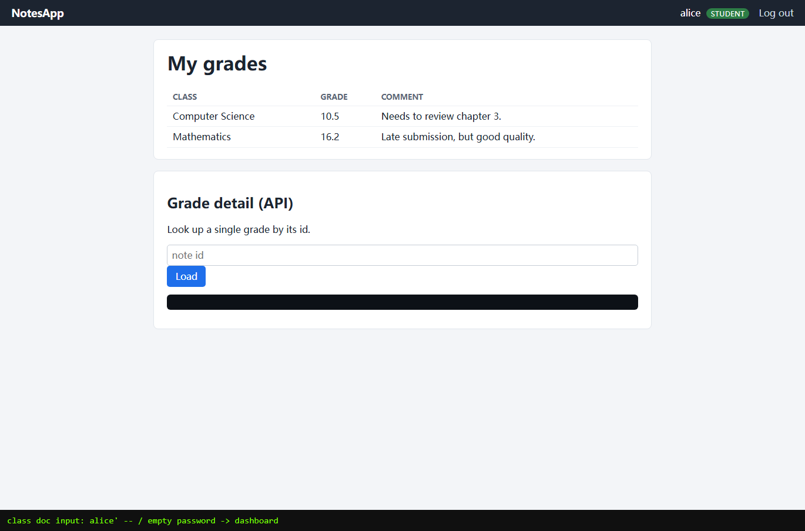
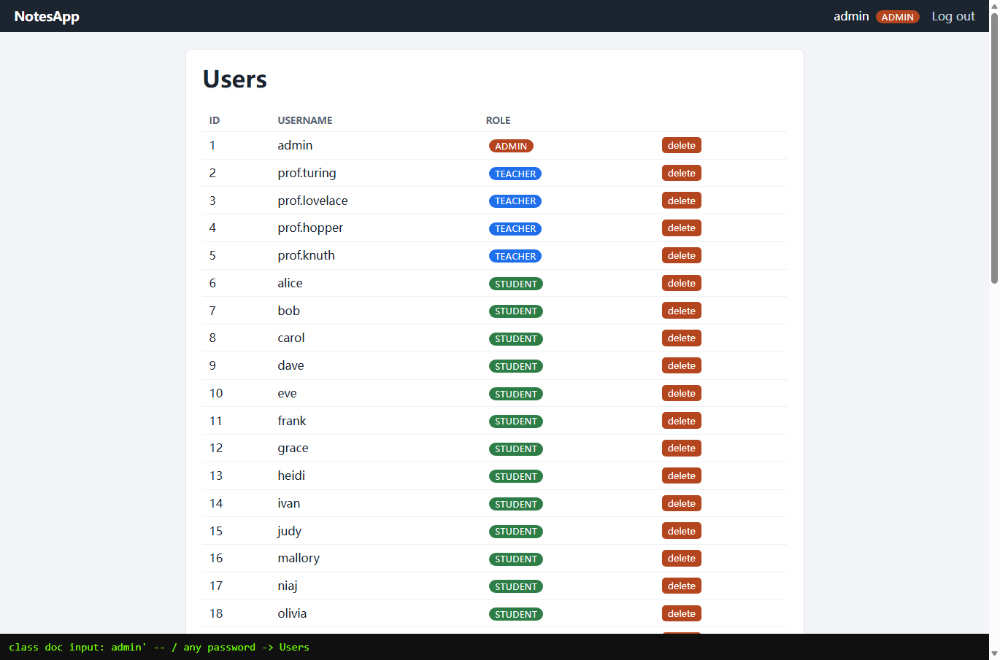
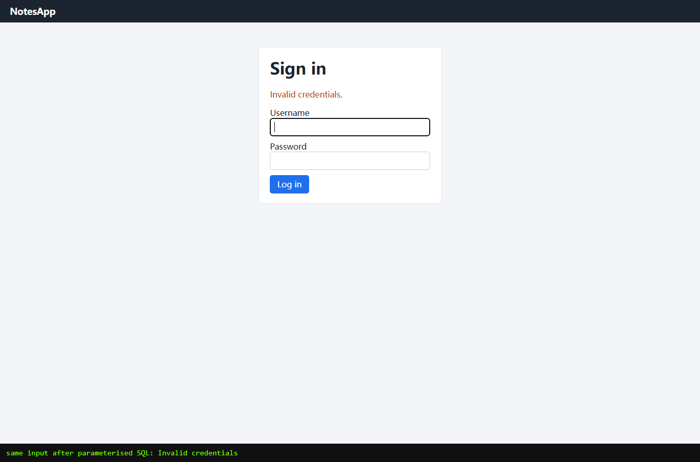
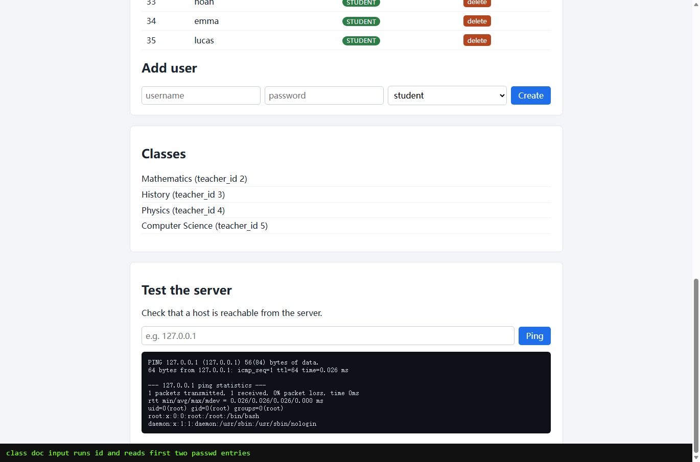
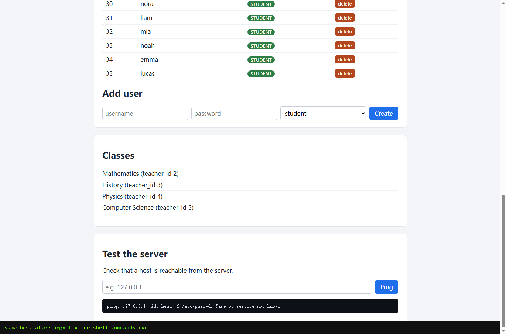
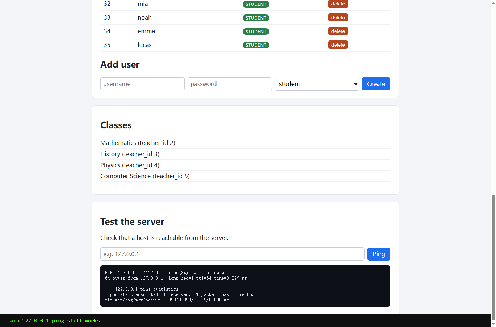
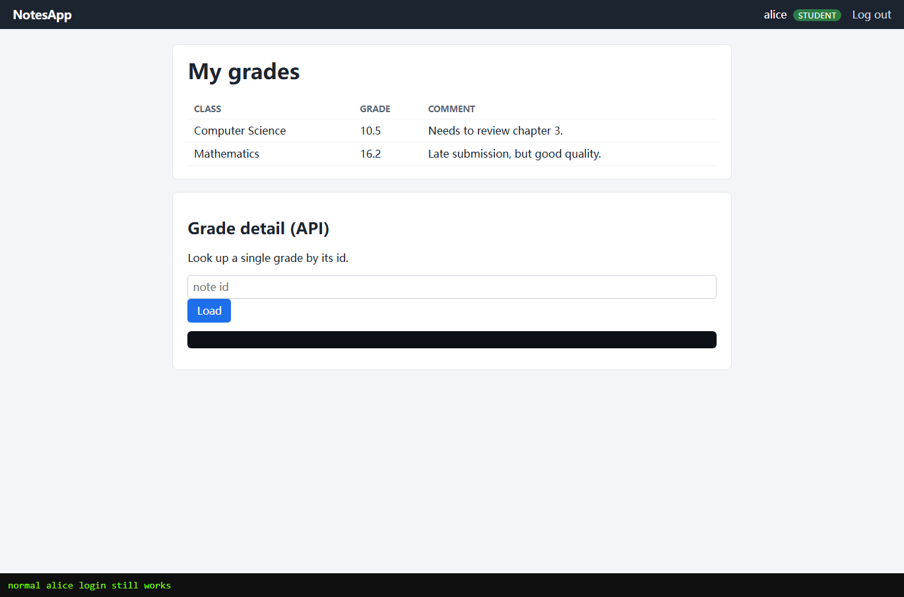

I tested the two injection flaws in the NotesApp lab, fixed them, and replayed the same inputs.
Before the fresh run, I predicted that admin' -- would log in with any password. The quote ends the username string and -- comments out the password condition.
admin' -- , password anything → POST /login 302, GET /admin 200. With alice' -- and an empty password, Alice's dashboard also opened.
The lesson's query joined user input into SQL. I changed it to placeholders and supplied a tuple:
query = (
"SELECT id, username, role FROM users "
"WHERE username = %s AND password = %s"
)
cur.execute(query, (username, password))
After rebuilding, both literal inputs showed “Invalid credentials”; the protected page redirected to login. A normal Alice login still worked.


admin' -- is not a bypass there. I ran the exact lesson payload on the matching old revision. For the current app I kept Argon2 and parameterised the username; both versions and their raw results are separated in the evidence folder.As admin, I entered 127.0.0.1; id; head -2 /etc/passwd. The shell treated the semicolons as separators. The output showed uid=0(root) and the first two passwd entries.

The problem was constructing a shell command from the host field. I replaced it with an argument list:
result = subprocess.run(
["ping", "-c", "1", host],
capture_output=True, text=True, timeout=10,
)
After the fix, I submitted the same injected host again. Ping treated it as one invalid hostname: “Name or service not known.” There was no uid or passwd output.


| Normal feature | Observed after fixes |
|---|---|
| Alice / alicepw | Dashboard returned HTTP 200 |
| Ping 127.0.0.1 | HTTP 200; 64 bytes received |
Conclusion: parameterised SQL and an argument list close the two injection paths. Normal login and ping remain usable.
